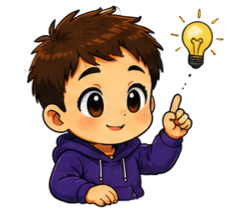
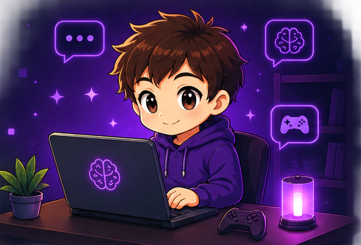
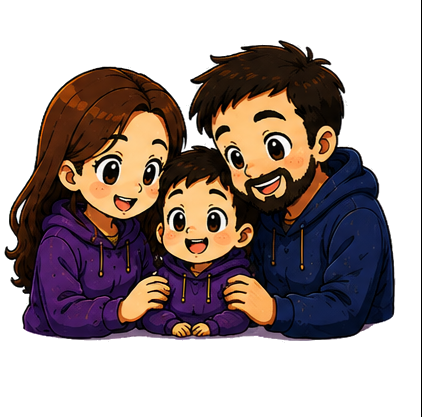
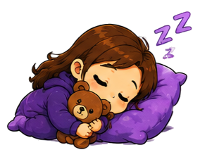

Divulgación psicológica
Contenido claro y práctico sobre salud mental, tecnología y gaming.
01 · Sobre mí
La tecnología forma parte de la vida cotidiana. Por eso también puede formar parte de una conversación psicológica útil y sin prejuicios.
Mi objetivo es crear un espacio en el que niños, adolescentes y familias puedan entender qué está pasando, adquirir herramientas y avanzar paso a paso.
Me interesa especialmente la intersección entre salud mental, videojuegos y tecnología: hábitos digitales, regulación emocional, diseño de recompensas, uso de pantallas y prevención.
“ No se trata de demonizar la tecnología. Se trata de aprender a relacionarnos con ella.”
¿Qué hago?
Combino la psicología con el mundo digital para ofrecer recursos, acompañamiento y divulgación.

02 · Qué hago
Combino la psicología con el mundo digital para ofrecer recursos, acompañamiento y divulgación a quien lo necesite.

Contenido claro y práctico sobre salud mental, tecnología y gaming.

Orientación para entender, prevenir y actuar juntos.
Guías, lecturas, materiales y mucho más para llevarte a casa.

Equilibrio, límites y uso consciente de la tecnología.
03 · Portfolio
Una muestra de los artículos, guías y materiales que voy compartiendo en cada una de las cuatro áreas en las que trabajo.
Cómo el diseño de recompensas activa la motivación y qué tiene esto de normal.
Ver pieza → HiloQué son, cómo funcionan y qué conviene saber antes de decir que sí.
Ver pieza → VídeoSeparando el pánico moral de lo que dice realmente la evidencia.
Ver pieza → Guía descargableUn guion de conversación que no empieza por la bronca.
Ver pieza → ArtículoQué mirar de verdad antes de saltar a la conclusión de "adicción".
Ver pieza → PlantillaUna plantilla para construir normas entre todos, no para imponerlas.
Ver pieza → ChecklistOcho preguntas para hacerte antes de alarmarte.
Ver pieza → GuíaLoot, grind, streaming, skins... lo esencial para entender de qué hablan.
Ver pieza → Guía descargableMaterial para trabajar hábitos digitales en el aula, sin sermón.
Ver pieza → ArtículoRachas, recompensas variables y notificaciones: el mecanismo por dentro.
Ver pieza → GuíaLa diferencia entre una norma que se cumple y una que se pelea cada día.
Ver pieza → InfografíaUn esquema visual simple para ordenar el día con pantallas de por medio.
Ver pieza →¿Buscas algo sobre un tema concreto? Escríbeme y lo vemos.
04 · Servicios
Sesiones individuales, orientación a familias y seguimiento continuado. Precios orientativos — hablamos y ajustamos el formato a lo que necesites.
Para adolescentes y adultos
Online o presencial
Para madres, padres y cuidadores
Online o presencial
4 sesiones, el formato que necesites
Ahorras un 10% frente a sesiones sueltas
¿Buscas una charla o taller para un centro educativo o una AMPA? Hablamos y lo diseñamos a medida.
05 · Me interesa especialmente
06 · Lo que dicen
Algunas de las cosas que me han compartido las familias y personas con las que he trabajado.
“Por fin alguien que entiende de verdad por qué mi hijo pasa tanto tiempo jugando, sin hacernos sentir culpables por ello.”
“Las guías de hábitos digitales nos ayudaron a poner límites sin que se convirtiera en una pelea cada tarde.”
“Como educador, el kit de recursos me dio un lenguaje común con el alumnado en vez de un sermón más sobre pantallas.”
“Explica los videojuegos sin prejuicios, desde dentro. Es la primera vez que me siento entendido y no juzgado.”
“Sus contenidos me sirvieron para entender qué eran realmente las loot boxes antes de tomar una decisión con mi hija.”
Testimonios de ejemplo — sustitúyelos por los tuyos reales antes de publicar.

Si tienes dudas, necesitas orientación o solo quieres saludar, estaré encantado de leerte.